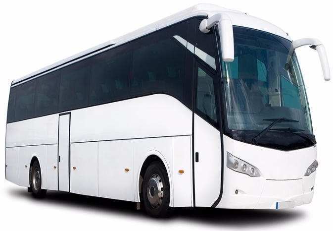
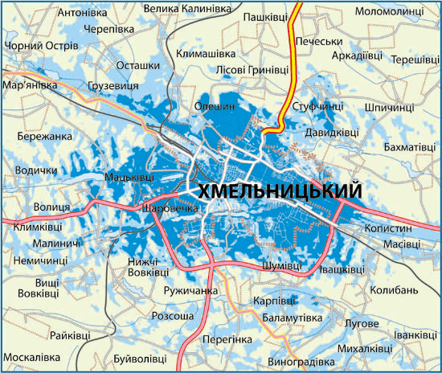

|  |  |
| Назва маршруту | Час відправлення |
|---|---|
| Київ-Святин (ч/р Кам.-Подільський,Чернівці) | 1:20 |
| Житомир-Чернівці | 2:15 |
| Київ-Чернівці (ч/р Кам.-Подільський,Хотин) | 2:55 |
| Київ-Чемерівці | 5:45 |
| Хмельницький-Сокиряни (ч/р Кам.-Подільський,Хотин) | 6:20 |
| Хмельницкий-Кишинів | 6:50 |